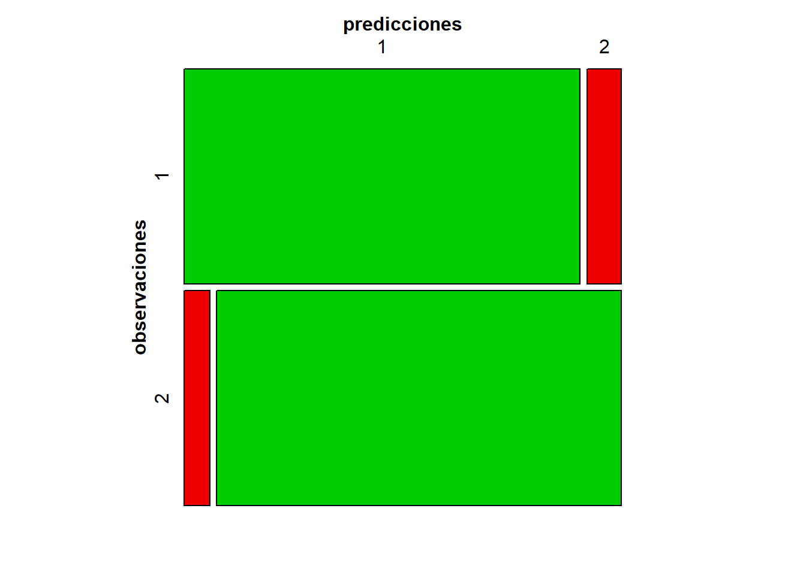

9.9 Regresión Logística y Clasificación
Las funciones de clasificación discutidas anteriormente se basan en variables cuantitativas. Aquí discutimos un enfoque de clasificación donde algunas o todas las variables son cualitativas. Este enfoque se llama Regresión Logística. En el entorno más simple, la variable respuesta \(Y\) está restringida a dos valores. Por ejemplo, la variable respuesta \(Y\) puede registrarse como “masculino” o “femenino” o “empleado” y “no empleado”, etc.
Aunque la respuesta puede ser una variable cualitativa de dos resultados posibles, siempre se pueden codificar los dos casos como \(0\) y \(1\), de ausencia y presencia de una característica. Por ejemplo, podemos tomar hombre\(=0\) y mujer\(=1\). Entonces la probabilidad \(p\) de que \(Y\) sea igual a \(1\) es un parámetro de interés. Ésta probabilidad representa la proporción en la población que está codificada con el número \(1\). La media de la distribución de ceros \(0\) y unos \(1\) también está dada por \(p\) ya que, para una variable aleatoria \(Y\) definida como sigue: \[ Y=\begin{cases} 0 \ \ : \ \ \ \text{ausencia presencia del atributo}\\ 1 \ \ : \ \ \ \text{presencia del atributo} \end{cases} \] con distribución dada por:
| Valores de \(Y\) | 1 | 0 |
|---|---|---|
| Probabilidades=p(Y=y) | p | 1-p |
se tien que: \[ Media=E[Y]=0(1-p)+1(p)=p \]
La proporción de ceros es \((1-p)=q\).
La varianza de la distribución de \(Y\) es: \[ Var[Y]=\sigma^2=E[Y^2]-E^2[Y]=0^2(1-p)+1^2(p)-p^2=p-p^2=p(1-p)=pq \]
Claramente la varianza no es constante. Por ejemplo, para \(p=0.5\) se tiene que \(\sigma^2=(0.5)(0.5)=0.25\), mientras que para \(p=0.8\) se tiene que \(\sigma^2=(0.8)(0.2)=0.16\). La varianza \(\sigma^2\)-se acerca a cero si \(p\)-se acerca a cero o a uno.
Sea la respuesta \(Y\) que toma valores cero o uno. Si quisiéramos modelar la probabilidad de que \(Y=1\) con un Modelo Lineal de un Sólo Predictor, digamos \(Z\), se podría escribir asi: \[ p=E\biggl[Y\ \bigl | \ Z=z\biggr]=\beta_0 + \beta_1\ Z \]
y sumarle un término de erro \(\varepsilon\). Pero existen varios inconvenientes en este modelo.
Los valores predichos de la variable respuesta \(Y\) podrían llegar a ser mayores que \(1\) o menores que \(0\), porque la expresión lineal de su valor esperado no es acotado.
Uno de los supuestos de un análisis de regresión es que la varianza de la variable respuesta \(Y\) es constante a través de todos los valores de la variable predictora \(Z\), pero como se vio anteriormente ésto no es el caso. Por supuesto, el método de estimación de Mínimos Cuadrados Ponderados podría mejorar esta situación.
Se necesita otro enfoque para introducir variables predictoras o covariables \(Z\) en el modelo anterior, ver (Baxter 1990). Sin embargo, si las covariables o predictoras no son fijadas por el investigador, el enfoque es condicionar los modelos para \(p(z)\) a los valores observados de las covariables \(\underline{\mathbf{z}}=\underline{z}\).
9.9.1 El Modelo Logit
En lugar de modelar la probabilidad \(p\) directamente con un modelo lineal, primero se considera la razón de probabilidades o Razón de Odds de finida por: \[ odds=\frac{p}{1-p} \]
lo cuál es el cociente o razón entre la probabilidad del uno sobre la probabilidad del cero. Tenga en cuenta que, a diferencia de la probabilidad \(p\), la Razón de Odds puede ser mayor que 1.
Si una proporción del \(0.8\) de las personas pasarán por la aduana sin que se revise su equipaje, entonces \(p=0.8\), pero la odds de no ser verificado es \(p/(1-p)=0.8/0.2=4\) o de 4 a 1. Aquí hay una falta de simetría, ya que la odds de ser verificado es \((1-p)/p=0.2/0.8=1/4\). Tomando lo natural logaritmos, encontramos que \(ln(4)=1.386\) y \(ln(l/4)=-1,386\) son exactamente opuestos.
Considere la función Logarítmica Natural de la Razón de Odds que se muestra en figura 9.12. Cuando las odds \(X\) son 1, por lo que los resultados 0 y 1 son igualmente probables, es decir \(p=1-p\), el logaritmo natural de \(X\) es cero. Cuando las odds \(X\) son mayores que uno, el logaritmo natural aumenta lentamente a medida que \(X\) aumenta. Sin embargo, cuando las odds \(X\) son menores que uno, el logaritmo natural disminuye rápidamente a medida que \(X\) tiende hacia cero.
Figura 9.12: Gráfico del Logarítmo de Odds
En Regresión Logística para una variable respuesta binaria \(Y\), se modela el logaritmo natural de la Razón de Odds, al cual se llama \(logit(p)\). Por lo tanto: \[ \begin{equation} logit(p)=Ln(odds)=Ln\biggl(\frac{p}{1-p} \biggr) \end{equation} \tag{9.62} \]
El Logit es una función de probabilidad de \(p\)-es decir, de la proporción de unos.
En el Modelo más Simple, se asume que la gráfica de logit es una línea recta en la variable predictora \(Z\), es decir: \[ \begin{equation} logit(p)=Ln(odds)=Ln\biggl(\frac{p}{1-p} \biggr)=\beta_0+\beta_1\ Z \end{equation} \tag{9.63} \]
en otras palabras, los logaritmos de la Razón de odds son lineales en la variable predictora.
Como a la mayoría de las personas le resulta más fácil pensar en términos de probabilidades, se pueden convertir el logit o logaritmo de la razón de odds a la probabilidad \(p\). Primero tomando exponencial a ambos lados de, \[ Ln\biggl(\frac{p}{1-p} \biggr)=\beta_0+\beta_1\ Z \]
se obtiene que: \[ \theta(z)=\frac{p(z)}{1-p(z)}=Exp\bigl( \beta_0 + \beta_1\ Z \bigr) \]
y resolviendo para \(p(z)\)-se obtiene que: \[ \begin{equation} p(z)=\frac{Exp\bigl( \beta_0 + \beta_1\ Z \bigr)}{1+Exp\bigl( \beta_0 + \beta_1\ Z \bigr)} \end{equation} \tag{9.64} \]
la cual describa una Curva Logística. En la figura 9.13, se muestra la gráfica de una Curva Logística para \(\beta_0=-1\) y \(\beta_1=2\).
Figura 9.13: Gráfica de ua Curva Logística
La relación entre \(p\) y \(Z\) no es lineal, pero tiene una forma gráfica de \(S\) como se observa en la figura anterior para el caso de \(\beta_0=-1\) y \(\beta_1=2\). El valor de \(\beta_0\) produce un valor de \(p\) igual a \(exp(\beta_0)/(1+exp(\beta_0))\)-cuando la variable predictora \(z=0\). Para el ejemplo de la figura 9.13, donde \(\beta_0=-1\) se tiene que: \[ \frac{exp(\beta_0)}{1+exp(\beta_0)}=\frac{exp(-1)}{1+exp(-1)}=0.269 \]
El parámetro \(\beta_1\) en la curva logística determina qué tan rápido cambia \(p\) para valores de \(z\), pero su interpretación no es tan simple como en la regresión lineal ordinaria debido a que en este caso la relación no es lineal, ni en \(z\) ni en \(\beta_1\). Sin embargo, se puede explorar la relación lineal para los logaritmos de las razones de odds dados por: \[ Ln\biggl(\frac{p}{1-p} \biggr)=\beta_0+\beta_1\ Z \]
En resumen La Curva Logística se puede escribir cmo sigue: \[ p(z)=\frac{Exp\bigl( \beta_0 + \beta_1\ Z \bigr)}{1+Exp\bigl( \beta_0 + \beta_1\ Z \bigr)} \ \ \ \ \ \Longleftrightarrow \ \ \ \ \ \ p(z)=\frac{1}{1+Exp\bigl( -\beta_0 - \beta_1\ Z \bigr)} \]
9.9.2 Análisis de Regresión Logística
Considere el modelo con varias variables predictoras, digamos por ejemplo \(r\)-variables predictoras \(Z_1,Z_2,\ldots,Z_r\). Sea \[ \underline{\mathbf{z}}_{\ j}=\begin{bmatrix}z_{j1} \\ z_{j2} \\ \vdots \\ z_{jr} \end{bmatrix} \] los valores de las \(r\)-variables predictoras para la \(j\)-ésima observación, \(j=1,2,\ldots,n\). Es habitual, como en la teoría normal de regresión lineal, establecer la primera entrada igual a \(1\) y en este caso se tiene que: \[ \underline{\mathbf{z}}_{\ j}=\begin{bmatrix}1\\ z_{j1} \\ z_{j2} \\ \vdots \\ z_{jr} \end{bmatrix} \]
AL condicionar sobre estos valores, se asume que la observación \(Y_j\) es distribuida Bernoulli con probabilidad de éxito \(p(\underline{\mathbf{z}}_{\ j})\), que depende de los valores de las covariables. Luego se tiene \[ P[\ Y_j=y_j\ ]=p^{y_j}(\underline{\mathbf{z}}_{\ j})\bigl[1-p(\underline{\mathbf{z}}_{\ j})\bigr]^{1-y_j} \ \ ; \ \ \ y_j=0,1 \] además, \[ E[\ Y_j\ ]=p(\underline{\mathbf{z}}_{\ j}) \ \ \ \ \text{y} \ \ \ \ Var[\ Y_j \ ]=p(\underline{\mathbf{z}}_{\ j})[1-p(\underline{\mathbf{z}}_{\ j}]=p(\underline{\mathbf{z}}_{\ j})q(\underline{\mathbf{z}}_{\ j}) \]
Ahora como anteriormente, no es la media la que sigue un modelo lineal sino el logaritmo natural de la Razón de odds. En particular, se asume el modelo: \[ \begin{equation} Ln\biggl(\frac{p(\underline{\mathbf{z}})}{1-p(\underline{\mathbf{z}})} \biggr)=\beta_0+\beta_1Z_1+\beta_2Z_2+\cdots+\beta_rZ_r=\underline{\boldsymbol{\beta}}^T \underline{\mathbf{z}}_{\ j} \end{equation} \tag{9.65} \]
donde, \[ \underline{\boldsymbol{\beta}}=\begin{bmatrix}\beta_0 \\ \beta_1 \\ \vdots \\ \beta_r \end{bmatrix}. \]
9.9.2.1 Estimaciones de Máxima Verosimilitud del Modelo
Las estimaciones de los coeficientes o parámetros del modelo \(\beta\)´s, se pueden obtener mediante el método de máxima verosimilitud. La función de verosimilitud \(L\) está dada por la función de densidad de probabilidad conjunta evaluada en las cantidades observadas \(y_j\), de donde, \[ \begin{align*} L(b_0,b_1,b_2\ldots,b_r)& =\prod_{j=1}^n \ p^{y_j}(\underline{\mathbf{z}}_{\ j})\bigl[1-p(\underline{\mathbf{z}}_{\ j})\bigr]^{1-y_j}\\ &=\frac{\prod_{j=1}^n\ Exp\biggl(y_j(b_0+b_1z_{j1}+b_2z_{j2}+\cdots+b_rz_{jr} )\biggr)}{\prod_{j=1}^n\ \biggl(1+ Exp(b_0+b_1z_{j1}+b_2z_{j2}+\cdots+b_rz_{jr} )\biggr)} \end{align*} \tag{9.66} \]
Los valores de los parámetros que maximizan la verosimilitud no se pueden expresar en una solución de forma cerrada como en el caso de los modelos lineales de la teoría normal. En este caso, deben ser determinados numéricamente comenzando con una suposición inicial e iterando al máximo la función de verosimilitud. Técnicamente, a este procedimiento se le llama El Método de Mínimos Cuadrados Reponderados Iterativamente ver (McCullagh and Nelder 1989).
A los valores obtenidos numéricamente de las estimaciones de máxima verosimilitud se le denotan por: \[ \widehat{\underline{\boldsymbol{\beta}}}=\begin{bmatrix} \widehat{\beta}_0 \\ \widehat{\beta}_1 \\ \vdots \\ \widehat{\beta}_r \end{bmatrix} \]
9.9.2.2 Intervalos de Confianza para los Parámetros
Cuando el tamaño de muestra \(n\)-es grande, el vector \(\widehat{\underline{\boldsymbol{\beta}}}\) se distribuye aproximadamente normal con vector de medias \(\underline{\boldsymbol{\beta}}\) (los valores predominantes de los parámetros) y con matriz de varianzas covarianzas dada por: \[ \begin{equation} \widehat{Var}[\ \widehat{\underline{\boldsymbol{\beta}}} \ ]\approx \biggl[ \sum_{j=1}^n \ \widehat{p}(\underline{\mathbf{z}}_{\ j})\bigl[1-\widehat{p}(\underline{\mathbf{z}}_{\ j})\bigr]\underline{\mathbf{z}}_{\ j}\ \underline{\mathbf{z}}_{\ j}^T \biggr]^{-1} \end{equation} \tag{9.67} \]
Las raíces cuadradas de los elementos de la Diagonal de la matriz \(\widehat{Var}[\ \widehat{\underline{\boldsymbol{\beta}}} \ ]\)-son las desviaciones estándar estimadas o errores estándar muestrales \((SE)\) de los estimadores \(\widehat{\beta}_0,\widehat{\beta}_1,\ldots,\widehat{\beta}_r\), respectivamente. En muestra grandes, los Intervalos de Confianza del \(95\%\) para \(\beta_k\) están dados por: \[ \begin{equation} \widehat{\beta}_k \ \ \pm \ \ 1.96\ SE(\widehat{\beta}_k) \ \ \ ; \ \ \ k=0,1,2,\ldots,r \end{equation} \tag{9.68} \]
Los intervalos de confianza se pueden usar para juzgar la significancia de los términos individuales para el modelo logit.
También se pueden construir los Intervalos de Confianza en muestras grandes para el logit y para la proporción poblacional \(p(\underline{\mathbf{z}}_{\ j})\), ver (Hosmer Jr, Lemeshow, and Sturdivant 2013) para más detalles.
9.9.2.3 Prueba de Razón de Verosimilitud
Para el Modelo con \(r\)-variables predictoras más una constante, se denota la verosimilitud maximizada po: \[ L_{max}=L\bigl( \widehat{\beta}_0,\widehat{\beta}_1,\widehat{\beta}_2\ldots,\widehat{\beta}_r \bigr) \] Si la hipótesis nula es: \(H_0\ : \ \beta_k=0\), los cálculos numéricos producen nuevamente el Estimador de Máxima Verosimilitud del Modelo Reducido (MR), y a su vez, el valor máximo de la verosimilitud de dicho modelo, denotado por: \[ L_{max,Redicido}=L\bigl( \widehat{\beta}_0,\widehat{\beta}_1,\widehat{\beta}_2\ldots,\beta_{k-1},\beta_{k+1},\cdots,\widehat{\beta}_r \bigr) \]
Cuando se realiza la Regresión Logística, es común probar \(H_0\) usando la Estadística menos dos veces el logarítmo de La Razón de Verosimilitud, la cuál en este contexto se llama La Desvianza y está dada por: \[ \begin{equation} D=-2Ln\biggl( \frac{L_{max,Redicido}}{L_{max}}\biggr) \end{equation} \tag{9.69} \]
La Estadística Desvianza-\(D\) se distribuye aproximadamente como una \(\chi^2\)-con un grado de libertad cuando el modelo reducido (MR) tiene pocas variables predictoras. La hipótesis nula \(H_0\)-se rechaza para valores grandes de la desvianza-\(D\).
Una prueba alternativa para la significancia de un término individual en el Modelo para la Logit se debe a Wald ver (Hosmer Jr, Lemeshow, and Sturdivant 2013). La prueba de Wald de \(H_0\ : \ \beta_k=0\) usa la estadística de prueba dada por: \[ Z=\frac{\widehat{\beta}_k}{SE(\widehat{\beta}_k)} \]
o su versión chi-cuadrado dada por \(Z^2\)-con una grado de libertad. La prueba de La Rrazón de Verosimilitud es preferida a la prueba de Wald, ya que el nivel de esta prueba es típicamente cercano al nivel nominal de \(\alpha\).
Generalmente, si la hipótesis nula \(H_0\), espesifica un subconjunto, de digamos \(m\)-parámetros iguales a cero simultáneamente, La Desvianza se construye para el Modelo Reducido (MR) involucrado y nos referimos a una distribución chi-cuadrado con \(m\)-grados de libertad.
9.9.2.4 Clasificación
Sea la variable respuesta \(Y\) igual a 1 si la unidad observacional pertenece a la población 1 y sea \(Y\) igual a cero si ésta pertenece a la población 2. (La elección de 1 y 0 para los resultados de la respuesta es arbitraria pero conveniente. En el ejemplo que sigue, se usan el 1 y 2 como resultados). Una vez que se ha establecido la función de regresión logística y se utilicen conjuntos de entrenamiento para cada uno de las dos poblaciones, se puede proceder a clasificar nuevas observaciones. Las probabilidades aprioris y los costos son difíciles de incorporar al análisis, por lo que la regla de clasificación se convierte en lo que sigue: \[ \begin{equation} \text{Asignar la observación} \ \ \underline{\mathbf{z}} \ \ \text{a la población-1}, \\ \text{si la Razón de Odds Estimada es mayor que 1} \end{equation} \tag{9.70} \]
o equivalentemente: \[ \text{Si:} \ \ \frac{\widehat{p}(\underline{\mathbf{z}})}{1-\widehat{p}(\underline{\mathbf{z}})}=Exp\biggl(\widehat{\beta}_0 + \widehat{\beta}_1Z_1+ \widehat{\beta}_2Z_2+\cdots+\widehat{\beta}_rZ_r \biggr)>1 \]
y tomando logaritmos a ambos lados se tiene la expresión equivalente dada por: \[ \begin{equation} \text{Asignar la observación} \ \ \underline{\mathbf{z}} \ \ \text{a la población-1}, \\ \text{si El Discriminante Lineal es mayor que 1} \end{equation} \tag{9.70} \]
o equivalentemente: \[ \text{Si:} \ \ Ln\biggl(\frac{\widehat{p}(\underline{\mathbf{z}})}{1-\widehat{p}(\underline{\mathbf{z}})}\biggr)=\widehat{\beta}_0 + \widehat{\beta}_1Z_1+ \widehat{\beta}_2Z_2+\cdots+\widehat{\beta}_rZ_r >1 \]
Ejemplo 9.16 (Uso de la Rgeresión Logística en Clasificación) Continuando con los datos del ejemplo 9.8 sobre las poblaciones de salmones pescados nacidos en Alaska y Canadá, ahora se introducirá un modelo de regresión logística.
\[ X_1 = \text{Diámetro de los anillos para el crecimiento en agua dulce del primer año (en cientos de una pulgada)} \]
\[ X_2 = \text{Diámetro de los anillos para el crecimiento en agua marina o salada del primer año (en cientos de una pulgada)} \]
Además se tiene la información del género, donde los machos son codificados con el número-1 y las hembras con el número-2.
Figura 9.14: Grafico de Dispersión de Datos (Dos Poblaciones)
Los datos se presentan en la siguiente tabla.
|
|
En el ejemplo 9.8, se ignoró el género del salmón al considerar el problema de clasificar el salmón como de Alaska o canadá basado en mediciones del crecimiento de anillo. Quizás sea posible una mejor clasificación si se considera el género en el análisis.
## Analysis of Deviance Table
##
## Model: binomial, link: logit
##
## Response: Región
##
## Terms added sequentially (first to last)
##
##
## Df Deviance Resid. Df Resid. Dev Pr(>Chi)
## NULL 99 138.6
## Género 1 0.0 98 138.6 1
## Agua_Dulce 1 80.8 97 57.8 < 2e-16
## Agua_Marina 1 19.2 96 38.7 1.2e-05
##
## NULL
## Género
## Agua_Dulce ***
## Agua_Marina ***
## ---
## Signif. codes:
## 0 '***' 0.001 '**' 0.01 '*' 0.05 '.' 0.1 ' ' 1En lo que sigue se tienen los resultados de un Análisis de Regresión logística de los datos del salmón. Aquí la variable respuesta \(Y\) es \(1\) si el salmón es de Alaska y es \(2\) si es salmón canadiense. Las variables predictoras (o covariables o regresoras o independientes) son el género (igual a \(1\) si es mujer e igual a \(2\) si macho), el crecimiento de los anillos en agua dulce y el crecimiento de los anillos en agua marina o salada.
Los parámetros estimados del modelo son. \[ \widehat{\underline{\boldsymbol{\beta}}}=\begin{bmatrix} \widehat{\beta}_0 \\ \widehat{\beta}_1 \\ \widehat{\beta}_2 \\ \widehat{\beta}_3 \end{bmatrix}= \begin{bmatrix} 3.7866 \\ 0.2816 \\ 0.1264\\ -0.0486 \end{bmatrix} \]
De la salida de los resultados en la Pruebas la Hipótesis Nula Global o prueba de significancia de la regresión, el resultado de la prueba de Razón de Verosimilitud arroja los siguientes valores.
Para probar la hipótesis global dada por: \[ H_0 \ : \ \beta_1=\beta_2=\beta_3=0 \\ H_a\ : \ \text{Al menos un} \ \beta_i\neq 0 \ , \ i=1,2,3 \]
Se tiene que la Estadística de Prueba es: \[ \chi_0^2= \text{Devianza_Nula-Devianza_Residual}\\ =\text{Devianza del MR-Devianza del MF}\\ = 138.6294-38.6738\\ = 99.9557 \ \ \sim \chi_k^2 \ \ \ k=3 ; \]
El valor-p para esta prueba es: \[ Valo-p=1.5887\times 10^{-21} \]
y como este valor es menor que \(\alpha\), luego el Modelo es significativo, lo que significa que al menos se requiere una covariable o variable explicativa en el Modelo de Regresión Lineal Logit.
Examinando la significancia de los términos individuales bajo el Análisis de estimaciones de máxima verosimilitud, de los resultados de la siguiente tabla, vemos que la prueba de Wald sugiere que el género no es significativo (\(valor-p = 0,7356\)).
## Estimate Std. Error z value Pr(>|z|)
## (Intercept) 3.7866 6.2936 0.6017 0.5474
## Género2 0.2816 0.8338 0.3377 0.7356
## Agua_Dulce 0.1264 0.0357 3.5415 0.0004
## Agua_Marina -0.0486 0.0146 -3.3386 0.0008Por otro lado, el crecimiento en agua dulce y en agua marino son covariables importantes. El género puede ser eliminado del modelo. No es una variable útil para la clasificación. El modelo de Regresión Logística se puede reestimar sin el género y se puede utilizar la función de regresión ajustada resultante para clasificar el salmón como nacido en Alaska o en canadiense mediante la regla de clasificación dada en (9.70).
Con respecto al problema de clasificación, pero manteniendo el género, se asigna el salmón \(j\)-ésimo a la población-1, es decir, a alaska, si el clasificador lineal dado por: \[ \underline{\boldsymbol{\beta}}^T\underline{\mathbf{z}}=\widehat{\beta}_0+\widehat{\beta}_1 (Gnenero)+\widehat{\beta}_2 (Agua_{Dulce})+\widehat{\beta}_3 (Agua_{Marina}) \geq 0 \]
es decir: \[ \underline{\boldsymbol{\beta}}^T\underline{\mathbf{z}}=3.7866 + 2.2816 (Genero) + 0.1264 (Agua_{Dulce}) - 0.0486 (Agua_{Marina}) \geq 0 \]
Las Observaciones Mal Clasificadas son:
| Región | Género | Agua_Dulce | Agua_Marina | y |
|---|---|---|---|---|
| 1 | 1 | 131 | 355 | 3.0790 |
| 1 | 2 | 123 | 372 | 1.5222 |
| 1 | 1 | 123 | 372 | 1.2406 |
| 1 | 2 | 118 | 381 | 0.4523 |
| Región | Género | Agua_Dulce | Agua_Marina | y |
|---|---|---|---|---|
| 2 | 1 | 129 | 420 | -0.3358 |
| 2 | 2 | 136 | 438 | -0.0450 |
| 2 | 2 | 90 | 385 | -3.2822 |
De esta tabla de Mal Clasificados se tiene que la matriz de confusión es:
| Miembro Predicho | |||
|---|---|---|---|
| \(\pi_1\)-Alaska | \(\pi_2\)-Canadá | ||
| Miembro | \(\pi_1\)-Alaska | 46 | 4 |
| Actual | \(\pi_2\)-Canadá | 3 | 47 |
La Tasa de Error Aparente (APER), expresada en porcentaje es: \[ APER=\frac{4+3}{50+50}\times 100=7\% \]
Otra forma:
## predicciones
## observaciones 1 2
## 1 46 4
## 2 3 47
Al realizar una Clasificación Logística, sería preferible contar con una estimación de las probabilidades de Mal Clasificación utilizando el enfoque Jackknife (uno afuera a la vez), pero ésto Actualmente no está disponible en los principales paquetes de software estadístico.
Podríamos haber continuado el análisis del ejemplo anterior eliminando el género y utilizando sólo las mediciones de crecimiento de anillos en agua dulce y marina. Sin embargo, cuando prevalecen las distribuciones normales con matrices de varianzas covarianza iguales, la Clasificación Logística puede ser bastante ineficiente en comparación con el Clasificador Lineal de la Teoría Normal, ver (Efron 1975).
9.9.3 Regresión Logística con Respuestas Binomiales
Ahora se considera un caso un poco más general en el que se realizan varias ejecuciones en los mismos valores de las covariables \(\underline{\mathbf{z}}_{\ j}\) y existen un total de \(m\)-conjuntos diferentes en donde estas variables predictoras son constantes. Cuando se realizan \(n_j\) ensayos independientes con las variables predictoras \(\underline{\mathbf{z}}_{\ j}\), la respuesta \(Y_j\) se modela como una distribución binomial con probabilidad \(p(\underline{\mathbf{z}}_{\ j})= P(Éxito\ \bigl|\ \underline{\mathbf{z}}_{\ j})\).
Debido a que se supone que las \(Y_j\) son independientes, la verosimilitud es el producto dado por: \[ \begin{equation} L(\beta_0,\beta_1,\ldots,\beta_r)=\prod_{j=1}^m\ \binom{n_j}{y_j}\ p^{y_j}(\underline{\mathbf{z}}_{\ j})\biggl(1-p(\underline{\mathbf{z}}_{\ j})\biggr)^{n_j-y_j} \end{equation} \tag{9.71} \]
donde \(p(\underline{\mathbf{z}}_{\ j})\)-segue el Modelo de Regresión Logística Logit dado en (9.65).
El Estimador de Máxima Verosimilitud \(\widehat{\underline{\boldsymbol{\beta}}}\)-se debe obtener de forma numérica, debido a que no hay una expresión de forma cerrada para su calculo. Cuando el tamaño de muestra es grande, la Matriz de Varianzas-Covarianzas aproximada de \(\widehat{\underline{\boldsymbol{\beta}}}\) esta dada por: \[ \begin{equation} \widehat{Var}(\widehat{\underline{\boldsymbol{\beta}}})\approx \biggl[\sum_{j=1}^m\ n_j\ \widehat{p}(\underline{\mathbf{z}}_{\ j})\biggl(1-\widehat{p}(\underline{\mathbf{z}}_{\ j})\biggr)\underline{\mathbf{z}}_{\ j}\ \underline{\mathbf{z}}_{\ j}^{T} \biggr]^{-1} \end{equation} \tag{9.72} \]
y el \(i\)-ésimo elemento de la Diagonal es un Estimador de la Varianza de \(\widehat{\beta}_{i+1}\). Su raíz cuadrada, es un Estimador del Error Estándar Muestral \(SE(\widehat{\beta}_{i+1})\)-en muestra grande.
También se puede demostrar que un Estimador en Muestra Grande de la Varianza de la Probabilidad \(\widehat{p}(\underline{\mathbf{z}}_{\ j})\)-está dada por: \[ \begin{equation} \widehat{Var}\biggl(\widehat{p}(\underline{\mathbf{z}}_{\ k})\biggr)\approx \biggl(\widehat{p}(\underline{\mathbf{z}}_{\ k})\biggr)\biggl(1-\widehat{p}(\underline{\mathbf{z}}_{\ k})\biggr)^2\ \underline{\mathbf{z}}_{\ j}^T \biggl[\sum_{j=1}^m\ n_j\ \widehat{p}(\underline{\mathbf{z}}_{\ j})\biggl(1-\widehat{p}(\underline{\mathbf{z}}_{\ j})\biggr)\underline{\mathbf{z}}_{\ j}\ \underline{\mathbf{z}}_{\ j}^{T} \biggr]^{-1}\underline{\mathbf{z}}_{\ k} \end{equation} \tag{9.73} \]
La consideración del intervalo de más y menos dos desviaciones estándar estimadas de \(\widehat{p}(\underline{\mathbf{z}}_{\ j})\) puede sugerir observaciones que son difíciles de clasificar.
9.9.4 Chequeo del Modelo
Una vez que el Modelo es Ajustado a los datos, una buena práctica es investigar la adecuación del modelo ajustado. Se deben tratar las siguientes preguntas:
Existe algún alejamiento o desviación sistemático del Modelo de Regresión Logístico Ajustado?
Existen alguna observaciones que son inusuales que no se ajustan al patrón global de los datos (posibles outliers)?
Existen algunas observaciones que conducen a cambios importantes en el análisis estadístico cuando ellas son incluidas o excluidas del ajuste del modelo (ie. posibles observaciones influenciales)?
Si no existe una estructura paramétrica para las probabilidades de ensayo únicas \(p(\underline{\mathbf{z}}_{\ j})= P(Éxito\ \bigl|\ \underline{\mathbf{z}}_{\ j})\), cada una podría ser estimada utilizando el número observado de éxitos (ie. de unos) \(y_i\) en los \(n_i\)-ensayos. Bajo este Modelo no-paramétrico, o Modelo Saturado, La contribución a la Verosimilitud del \(j\)-ésimo caso esta dada por: \[ \binom{n_j}{y_j}p^{y_j}(\underline{\mathbf{z}}_{\ j})\biggl(1-p(\underline{\mathbf{z}}_{\ j})\biggr)^{n_j-y_j} \]
la cual se maximiza con las elecciones de: \[ \hat{p} (\underline{\mathbf{z}}_{\ j})=\frac{y_j}{n_j} \ , \ \text{para} \ \ j=1,2,\ldots,m \ \ \ \ m=\sum_{j=1}^mn_j \]
El valor que resulta de menos dos veces la verosimilitud no-paramétrica (NP) maximizada es: \[ \begin{equation} \hspace{-1.5cm}-2\ Ln (L_{Max,NP} )= -2\ \sum_{j=1}^m \ \biggl[ y_j Ln \biggl(\frac{y_j}{n_j}\biggr) + (n_j-y_j)\ Ln \biggl(1-\frac{y_j}{n_j}\biggr) \biggr] - 2\ Ln\biggl[ \prod_{j=1}^m\ \binom{n_j}{y_j}\biggr] \end{equation} \tag{9.74} \]
El último término del lado derecho de la ecuación (9.74) es común para todos los Modelos.
También se define La Desvianza entre el modelo no-paramétrico y un modelo ajustado que tiene una constante y \(r-1\)-variables predicadoras, como menos dos veces la Razón de la log-verosimilitud o: \[ \begin{equation} G^2= 2\ \sum_{j=1}^m \ \biggl[ y_j Ln \biggl(\frac{y_j}{\hat{y}_j}\biggr) + (n_j-y_j)\ Ln \biggl(\frac{n_j-y_j}{n_j-\hat{y}_j}\biggr) \biggr] \end{equation} \tag{9.75} \]
donde, \[ \hat{y}_j=nj\ \hat{p} (\underline{\mathbf{z}}_{\ j}) \ \ , \ \ \text{es el número estimado de Exitos}. \] Esta es la cantidad de Devianza Específica que juega un papel similar al que juegan la Suma de Cuadrados de Residuales (o error) en el Entorno de Modelos Lineales.
Para muestras grandes, \(G^2\)-tiene aproximadamente una distribución chi-cuadrado con \(f\)-grados de libertad, igual al número de observaciones \(m\)-menos el número de parámetros \(\beta\)´s-estimados.
Note que la Devianza del Modelo Full, \(G^2_{\ Full}\), y la Devianza del Modelo Reducido, \(G^2_{\ Reduced}\), conducen a la contribución de los términos predictores adicionales o extras: \[ \begin{equation} G^2_{\ Reduced}-G^2_{\ Full}=-2\ Ln \biggl(\frac{L_{Max,Reduced}}{L_{Max,Full}} \biggr) \end{equation} \tag{9.76} \]
Esta diferencia se distribuye aproximadamente como una chi-cuadrado con \(df=df_{Reduced}-df_{Full}\).
Cuando \(m\) es grande, hay demasiadas probabilidades para estimar bajo el modelo no-paramético y la aproximación de chi-cuadrado no se puede establecer debido a la existencia de métodos de prueba. Es mejor confiar en La Pruebas de Razón de Verosimilitud de los Modelos Logísticos donde algunos términos son eliminados.
9.9.5 Prueba de Residuales y de Bondad de Ajuste
Los residuales se pueden inspeccionar en busca de patrones que sugieran la falta de ajuste de la forma del Modelo Logit y que sugieran la elección de variables predictoras (o covariables). En la Regresión Logística los residuales no están tan bien definidos como en los Modelos de Regresión Múltiple discutidos en un Capítulo anterior. Se presentan tres definiciones diferentes de residuales disponibles.
9.9.5.1 Residuales Devianzas (\(d_j\))
Los Residuales Devianza se definen como sigue: \[ \begin{equation} d_j=\pm \sqrt{2\biggl[y_j Ln \biggl(\frac{y_j}{nj\ \hat{p} (\underline{\mathbf{z}}_{\ j})}\biggr) + (n_j-y_j)\ Ln \biggl(\frac{n_j-y_j}{n_j(1-\hat{p} (\underline{\mathbf{z}}_{\ j}))}\biggr) \biggr]} \end{equation} \tag{9.77} \]
donde los signos de \(d_j\)-son el mismo que el signo de \(y_j -n_j\ \hat{p} (\underline{\mathbf{z}}_{\ j})\), y \[ \text{Si} \ \ y_j=0 \ \ \ \ \Rightarrow \ \ \ \ d_j=-\sqrt{2n_j\ \biggl|Ln\biggl(1-\hat{p} (\underline{\mathbf{z}}_{\ j})\biggr)\biggr|}\\ \text{Si} \ \ y_j=n_j \ \ \ \ \Rightarrow \ \ \ \ d_j=-\sqrt{2n_j\ |Ln(\hat{p} (\underline{\mathbf{z}}_{\ j}))|} \]
9.9.5.2 Residuales de Pearson (\(r_j\))
Los residuales de Pearson se definen como sigue: \[ \begin{equation} r_j=\frac{y_j-n_j\ \hat{p} (\underline{\mathbf{z}}_{\ j})}{\sqrt{n_j\ \hat{p} (\underline{\mathbf{z}}_{\ j})\biggl(1-\hat{p} (\underline{\mathbf{z}}_{\ j})\biggr)}} \end{equation} \tag{9.78} \]
9.9.5.3 Residuales de Pearson Estudentizados (\(r_{sj}\))
Estos se definen como sigue. \[ \begin{equation} r_{sj}=\frac{r_j}{\sqrt{1-h_{jj}}} \end{equation} \tag{9.79} \]
donde \(h_{jj}\)-es el \(j\)-ésimo elemento de la diagonal de la matriz-sombrero \(\mathbf{H}\) dada por la ecuación que sigue: \[ \begin{equation} \mathbf{H}=\mathbf{V}^{-1/2}\mathbf{Z}\biggl(\mathbf{Z}^T\mathbf{V}^{-1}\mathbf{Z}\biggr)^{-1}\mathbf{Z}^T\mathbf{V}^{-1/2} \end{equation} \tag{9.80} \]
donde, \(\mathbf{V}^{-1}\)-es la Matriz-Diagonal con elemento \(j-j\)-dado por: \[ n_j\ \hat{p} (\underline{\mathbf{z}}_{\ j})\biggl(1-\hat{p} (\underline{\mathbf{z}}_{\ j}) \biggr) \]
y \(\mathbf{V}^{-1/2}\)-es la Matriz-Diagonal con elemento \(j-j\)-dado por: \[ \sqrt{n_j\ \hat{p} (\underline{\mathbf{z}}_{\ j})\biggl(1-\hat{p} (\underline{\mathbf{z}}_{\ j}) \biggr)}. \]
Valores de los Residuales-Estudentizados mayores a 2.5 sugieren una falta de ajuste del modelo para el \(\underline{\mathbf{z}}_{\ j}\)-particular.
9.9.5.4 Prueba Global de Bondad de Ajuste
Una prueba general de bondad de ajuste, preferida especialmente para tamaños de muestras pequeñas, es proporcionada por el Estadística Chi-Cuadrado de Pearson, dado por: \[ \begin{equation} \chi^2=\sum_{j=1}^{m}\ r_j^2 = \sum_{j=1}^m\ \frac{\biggl(y_j-n_j\ \hat{p} (\underline{\mathbf{z}}_{\ j})\biggr)^2}{n_j\ \hat{p} (\underline{\mathbf{z}}_{\ j})\biggl(1-\hat{p} (\underline{\mathbf{z}}_{\ j})\biggr)} \end{equation} \tag{9.81} \]
Observe que el estadístico Chi-Cuadrado, es un resumen de ajuste de un solo número, la suma de cuadrados de los residuales de Pearson. La inspección de los residuales de Pearson nos permite examinar la calidad del ajuste del modelo sobre todo el patrón o comportamiento de las covariables.
Otra prueba de Bondad de Ajuste del Modelo se debe a Hosmer y Lemeshow (Hosmer Jr, Lemeshow, and Sturdivant 2013), la cual es aplicable solamente cuando la proporción de observaciones con patrones de covariables empatadas o ligadas es pequeña y todas las variables predictoras (o covariables) son continuas.
Además de la medida dada en ((9.80), existen otras medidas disponibles. Se describe la más común llamada El Delta Beta o Desplazamiento de Eliminación. Ésta medida ayuda a identificar observaciones que, por sí mismas, tienen una fuerte influencia sobre la regresión estimada. El cambio en los coeficientes de regresión, cuando todas las observaciones con los mismos valores de las covariables sobre el caso \(j\)-ésimo \(\underline{\mathbf{z}}_{\ j}\) son eliminadas, se cuantifica como: \[ \begin{equation} \Delta\beta_j=\frac{r_{sj}^2\ h_{jj}}{1-h_{jj}} \end{equation} \tag{9.82} \]
Una gráfica de \(\Delta\beta_j\)-versus \(j\)-se puede usar para inspeccionar casos influenciales.